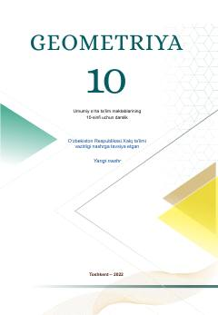

G110-sinf o'quvchilari uchun stereometriya asoslarini o'rgatuvchi darslik.
Ushbu darslik umumiy o'rta ta'lim maktablarining 10-sinfi o'quvchilari uchun mo'ljallangan bo'lib, stereometriya kursining asosiy tushunchalari, fazodagi to'g'ri chiziqlar va tekisliklarning o'zaro joylashuvini o'rgatadi. Kitob nazariy bilimlar bilan bir qatorda amaliy masalalar, test topshiriqlari va loyiha ishlarini o'z ichiga oladi.